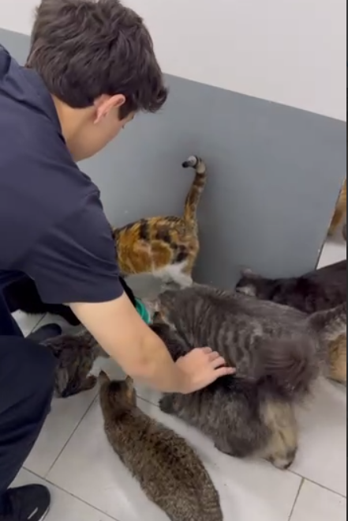
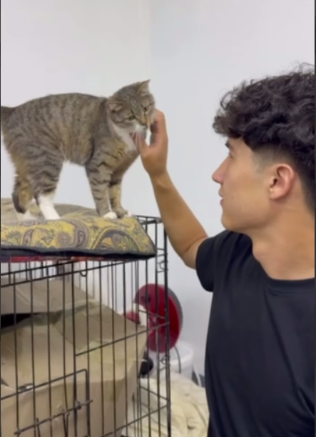
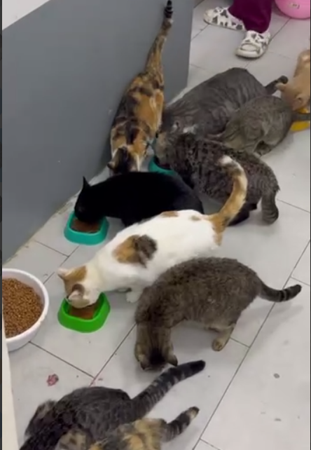

A student-led humanitarian initiative focused on animal welfare, volunteer action, awareness, and adoption support.
Learn MoreInterested in Adoption
Survey Participants
Student Volunteers
Community action through awareness and volunteerism

Webster Animal Care is a student initiative designed to support stray animals and local shelters in Tashkent.
The project combines research, field actions, and digital awareness campaigns to encourage adoption and community involvement.
Challenges faced by shelters and stray animals
Increasing number of stray animals in urban areas creates pressure on shelters and communities.
Shelters struggle with food, medicine, and safe living conditions.
Many pets are abandoned because owners cannot financially support them.
Limited public awareness reduces adoption and volunteer activity.
Volunteer feeding and shelter support activities


Students behind the initiative
Creative Lead & Coordinator
Survey Designer & Data Analyst
Field Operations & Programmming
Action Operations & Logistics
Financing & Deliviring